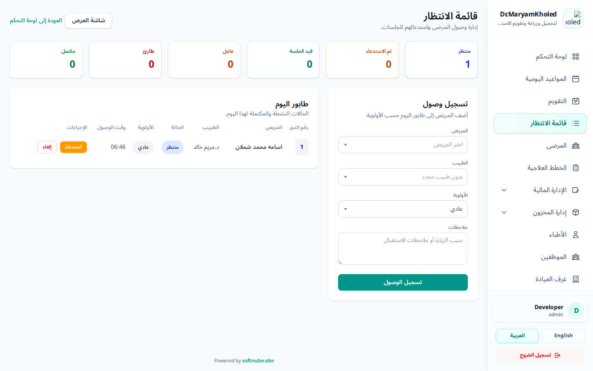
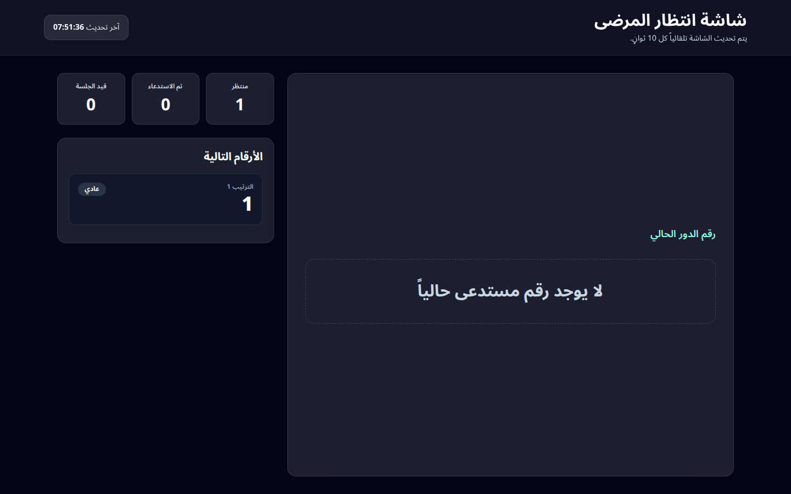

تُنظّم قائمة الانتظار تدفّق المرضى داخل العيادة من لحظة وصولهم إلى صالة الاستقبال وحتى انتهاء جلستهم. يستخدمها موظف الاستقبال لتسجيل وصول المرضى، إعطائهم أرقام دور، استدعائهم بالترتيب وحسب الأولوية، ومتابعة حالة كل مريض لحظياً.
تتكوّن الوحدة من شاشتين:
- شاشة الإدارة (للموظفين): لتسجيل الوصول والتحكم في الطابور — يصلها الموظف من رابط قائمة الانتظار في القائمة الجانبية.
- شاشة العرض العامة: تُعرض على شاشة في صالة الانتظار وتظهر الرقم الجاري استدعاؤه والأرقام التالية (انظر القسم 6).

شكل 1: شاشة إدارة قائمة الانتظار — البطاقات الإحصائية، طابور اليوم، ونموذج تسجيل الوصول
عند وصول مريض إلى العيادة، استخدم بطاقة "تسجيل وصول" على يسار الشاشة لإضافته إلى طابور اليوم:
- اختر المريض من القائمة المنسدلة (بحث بالاسم).
- اختر الطبيب المعالج (اختياري — يمكن تركه "بدون طبيب محدد").
- حدّد الأولوية: عادي / عاجل / طارئ (انظر القسم 4).
- أضف ملاحظات اختيارية (سبب الزيارة أو ملاحظة استقبال).
- اضغط "تسجيل الوصول" — يُضاف المريض إلى الطابور ويحصل تلقائياً على رقم دور متسلسل لهذا اليوم.
ℹ️
منع التكرار: لا يمكن تسجيل وصول نفس المريض مرتين في نفس اليوم طالما حالته ما زالت نشطة (منتظر/تم الاستدعاء/قيد الجلسة).
يعرض جدول "طابور اليوم" كل الحالات النشطة والمكتملة لليوم الحالي، مرتّبة تلقائياً حسب الحالة ثم الأولوية ثم وقت الوصول. لكل صف أزرار إجراءات تنقل المريض عبر مراحل الجلسة:
- منتظر الحالة الابتدائية بعد تسجيل الوصول — في انتظار الاستدعاء.
- تم الاستدعاء بعد الضغط على "استدعاء" — يظهر رقم المريض على شاشة العرض العامة.
- قيد الجلسة بعد الضغط على "بدء الجلسة" — المريض دخل غرفة الكشف.
- مكتمل بعد الضغط على "إكمال" — انتهت الجلسة.
كما يمكنك "إلغاء" أي حالة قبل إكمالها (يُطلب تأكيد قبل الإلغاء).
💡
سير العمل النموذجي: تسجيل الوصول ← استدعاء (يظهر الرقم في الصالة) ← بدء الجلسة ← إكمال. لكل خطوة يُسجَّل وقتها (وقت الوصول، وقت الاستدعاء، وقت البدء، وقت الإكمال).
مستويات الأولوية
- عادي الحالة الافتراضية.
- عاجل يُقدَّم في ترتيب الطابور على الحالات العادية.
- طارئ أعلى أولوية — يتصدّر الطابور.
يستخدم النظام الأولوية لترتيب الطابور تلقائياً، فلا حاجة لإعادة الترتيب يدوياً.
البطاقات الإحصائية
أعلى الشاشة ست بطاقات تعرض عدّادات لحظية لليوم: منتظر، تم الاستدعاء، قيد الجلسة، عاجل، طارئ، ومكتمل — لمتابعة ضغط العمل في الصالة بنظرة واحدة.
إذا كان المريض لديه موعد مجدول اليوم، يمكنك تسجيل وصوله إلى قائمة الانتظار مباشرةً من شاشة المواعيد اليومية دون إعادة إدخال بياناته:
- افتح شاشة المواعيد اليومية للتاريخ المطلوب.
- عند موعد المريض، اضغط زر "تسجيل في قائمة الانتظار".
- يُضاف المريض فوراً إلى الطابور بنفس الطبيب المرتبط بالموعد، ويحصل على رقم دور.
ℹ️
يعمل هذا الزر فقط للمواعيد المجدولة؛ وإذا كان المريض مسجّلاً بالفعل في طابور اليوم تظهر إشارة بذلك بدلاً من تكرار التسجيل.
شاشة العرض مصمَّمة لتُعرض على تلفاز أو شاشة في صالة الانتظار. افتحها بالضغط على زر "شاشة العرض" أعلى شاشة الإدارة، أو مباشرةً عبر الرابط /waiting-list/display.
- تعرض رقم الدور الجاري استدعاؤه بخط كبير في المنتصف.
- تعرض قائمة الأرقام التالية مع أولوية كل منها.
- تعرض عدّادات حية (منتظر / تم الاستدعاء / قيد الجلسة).
- تتحدّث تلقائياً كل 10 ثوانٍ دون أي تدخل.
🔒
خصوصية المرضى: شاشة العرض تُظهر أرقام الدور فقط ولا تعرض أسماء المرضى، فهي آمنة للعرض العلني. كما أن هذه الشاشة عامة (لا تتطلب تسجيل دخول) لتسهيل عرضها على جهاز مخصّص في الصالة.

شكل 2: شاشة العرض العامة — الرقم الحالي، الأرقام التالية، والعدّادات الحية (تحديث كل 10 ثوانٍ)
يتحكّم في الوصول لهذه الوحدة صلاحيتان تُسندان عبر الأدوار:
- عرض قائمة الانتظار (waiting-list.view): لفتح شاشة الإدارة ومتابعة الطابور.
- إدارة قائمة الانتظار (waiting-list.manage): لتسجيل الوصول والاستدعاء وبدء/إكمال/إلغاء الجلسات، وكذلك التسجيل من شاشة المواعيد.
ℹ️
شاشة العرض العامة وحدها لا تتطلب صلاحية أو تسجيل دخول.